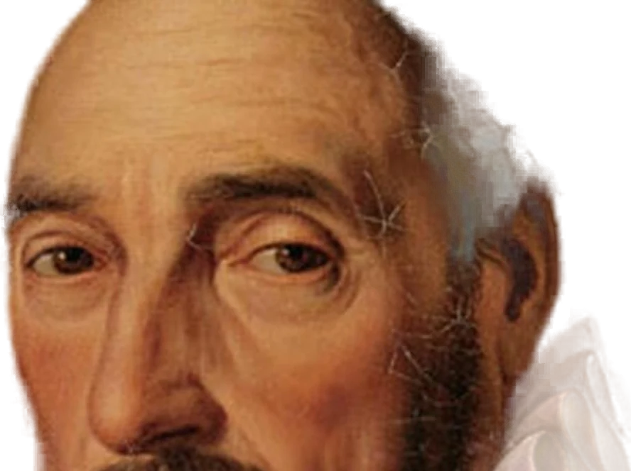

Escolha umdois jeitos de perder
para ganhar
-

 Nº 01 · Dostoiévski
O Idiota
Ser bom é suficiente num mundo que não é?
Entrar →
Nº 01 · Dostoiévski
O Idiota
Ser bom é suficiente num mundo que não é?
Entrar →
-

Nº 02 · Montaigne Solte Por que tudo melhora quando você para de apertar? Entrar → -
Nº 03 em breve O próximo paradoxo ainda está sendo pintado.